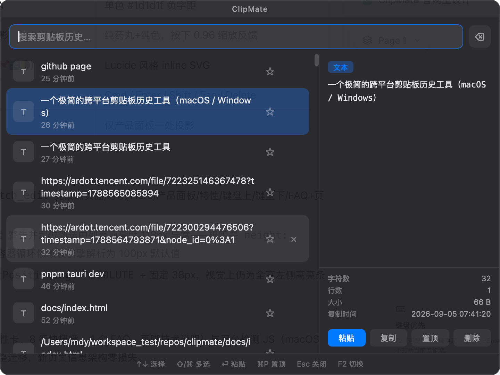

键盘优先
F2（可配置）全局唤起，方向键 + Enter 完成粘贴，不打断当前工作流。
极简跨平台剪贴板历史工具。热键唤起、方向键选择、回车粘贴，全程不离开键盘。
F2 唤起面板 · ↑ ↓ 选择 · Enter 粘贴 · Esc 关闭

覆盖剪贴板历史的日常高频场景。
F2（可配置）全局唤起，方向键 + Enter 完成粘贴，不打断当前工作流。
同时记录复制的文本与图片，输入即实时过滤；输入「图片」可只看图片。
文本历史 JSONL 落盘，重启不丢；最多 300 条，去重提升。
Cmd+P / Ctrl+P 置顶常用条目（地址、工号、手机号…），永不被上限淘汰。
Shift / Cmd 多选条目，Enter 按顺序拼接粘贴，Delete 批量删除。
dark / light 双主题；面板顶部居中或跟随光标；开机自启一键勾选。
从唤起到粘贴，一次都不需要碰鼠标。
安装与首次使用
~/Library/Application Support/com.mdy.clipmate/，Windows 在 %APPDATA%\com.mdy.clipmate\；文本历史存 history.jsonl（图片仅内存）。